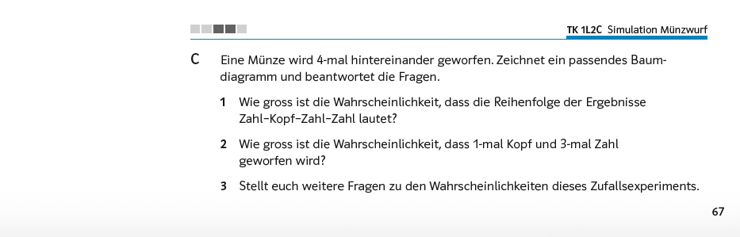
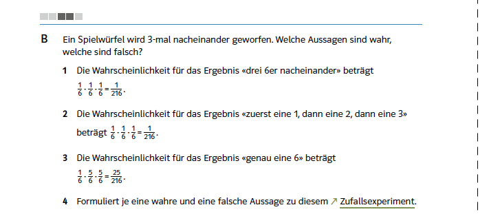
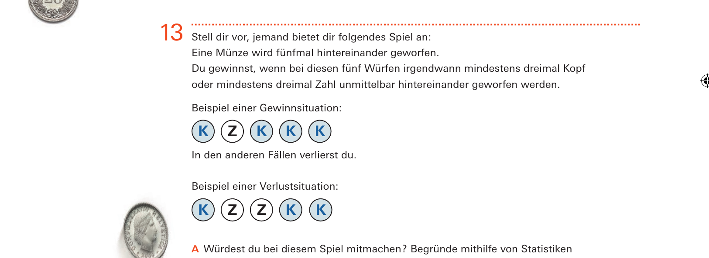
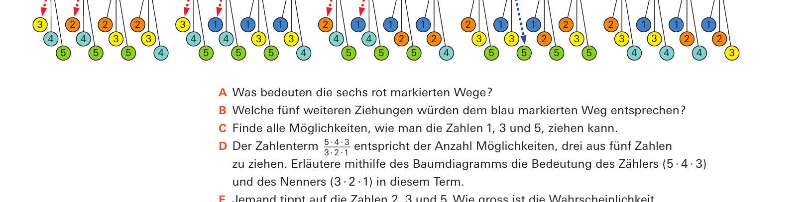

Bezug zur SchulpraxisEine Formel, die niemand aufschreibt

Quelle: Mathbuch 1 (überarbeitete Ausgabe), Aufgabe L2 C, S. 67
Bernoulli-Ketten kommen in der Sekundarstufe I nicht unter diesem Namen vor – die Situationen dagegen ständig. Immer dann, wenn eine Münze mehrfach geworfen oder ein Würfel wiederholt eingesetzt wird, liegt eine vor: gleichartige Versuche, voneinander unabhängig, mit derselben Trefferwahrscheinlichkeit. Gefragt wird dann nach der Anzahl der Treffer.
Halten Sie hier kurz inne. Die beiden Teilfragen sehen ähnlich aus. Worin unterscheiden sie sich – und welche der beiden ist aufwendiger?
Antwort anzeigen
Die erste fragt nach einer bestimmten Reihenfolge, also nach einem einzigen Pfad des Baumdiagramms: $\tfrac{1}{16}$. Die zweite fragt nach einer Anzahl, und die kommt auf vier verschiedenen Pfaden zustande: $\tfrac{4}{16}$. In unserer Schreibweise ist das $\binom{4}{1}\left(\tfrac{1}{2}\right)^1\left(\tfrac{1}{2}\right)^3$ – die Bernoulli-Formel, angewendet an einer Stelle, an der es sie noch nicht gibt.
Der Faktor $4$ entsteht dort nicht durch eine Formel, sondern durch Abzählen: Man sieht im Baumdiagramm nach, wie viele Wege zum Ziel führen. Genau das zählt der Binomialkoeffizient.

Quelle: Mathbuch 2 (überarbeitete Ausgabe), Aufgabe 2L5 B, S. 70
Wie weit das Abzählen trägt
Dass es trägt, zeigt die Fortsetzung ein Jahr später:
Die dritte Aussage ist falsch, und zwar genau um den fehlenden Faktor: Das Ereignis «genau eine 6»\ besteht aus drei Pfaden, richtig wäre $3 \cdot \tfrac{25}{216} = \tfrac{75}{216}$. Der Rechenweg der Aussage ist korrekt, und sie steht zwischen zwei richtigen, deren Terme äusserlich genauso aussehen.
Die Vorgängerausgabe hatte an dieser Stelle sieben Aussagen statt drei – darunter dieselbe Rechnung für «genau eine 1», ausgeschrieben als Summe dreier Produkte und als wahr zu erkennen. Die Überarbeitung hat sie gestrichen damit steht die Fehlvorstellung nun ohne ihr Gegenstück da.
Quelle: mathbu.ch 2, LU 21, Aufgabe 14, S. 72

Quelle: mathbu.ch 2, LU 21, Aufgabe 13, S. 72
Wo es aufhört zu tragen
Zwei Aufgaben derselben Lernumgebung zeigen die Grenzen, und zwar zwei verschiedene. Die erste:
Die ersten beiden Teilfragen sind noch abzählbar: ein Pfad von $64$, und $\binom{6}{3} = 20$ von $64$. Die dritte umfasst vier Werte auf einmal – das ist ein Mindestens-Ereignis, also die erweiterte Bernoulli-Formel. Durch Abzählen ist sie mühsam, über die Symmetrie zwischen Kopf und Zahl dagegen in einer Zeile zu haben. Bemerkenswert ist der mittlere Wert: Der Gleichstand ist der wahrscheinlichste Einzelausgang und tritt trotzdem nur in gut einem Drittel der Fälle ein.
Die zweite Grenze ist anderer Art. Zwei Aufgaben zuvor steht ein Spielangebot:
Eine Münze wird fünfmal geworfen, und man gewinnt, wenn irgendwo mindestens dreimal dasselbe unmittelbar hintereinander fällt. Das ist zwar eine Bernoulli-Kette – alle $32$ Folgen sind gleich wahrscheinlich –, aber der Binomialkoeffizient hilft nicht.

Quelle: mathbu.ch 3, LU 18, Aufgabe 8, S. 60
Und wo der Koeffizient dann doch hergeleitet wird
Nun gibt es im Lehrmittel sehr wohl eine Stelle, an der $\binom{n}{k}$ Schritt für Schritt entwickelt wird – nur an einer Aufgabe, in der gar keine Bernoulli-Kette vorliegt:
Beim Zahlenlotto werden drei aus fünf Zahlen gezogen, also ohne Zurücklegen. Die Teilaufgaben A bis C lassen erarbeiten, dass je sechs Wege des Baumdiagramms zu denselben drei Zahlen führen, und Teilaufgabe D schreibt diesen Zusammenhang als Term.
Fazit
Die Bernoulli-Formel werden Sie in der Sekundarstufe I nicht aufschreiben. Drei Dinge brauchen Sie trotzdem.
Erstens die Fähigkeit zu erkennen, wann eine Bernoulli-Kette vorliegt. Davon hängt ab, ob die Pfade gleich schwer sind – und beim Ziehen ohne Zurücklegen sind sie es nicht. Beide Situationen stehen im Lehrmittel, äusserlich gleich dargestellt.
Zweitens das Wissen, wo das Abzählen an seine Grenze kommt. Bei $n = 4$ ist es der beste Weg, bei $n = 6$ wird es mühsam, bei zwanzig Versuchen unmöglich. Das erklärt, warum die Lehrmittel bei kleinen Zahlen bleiben, und es sagt Ihnen, wo Sie eine Aufgabe nicht vergrössern dürfen.
Und drittens den Blick dafür, was eine Aufgabe eigentlich verlangt. «Genau zweimal Kopf»\ und «mindestens dreimal hintereinander dasselbe»\ sehen ähnlich aus das eine ist ein Binomialproblem, das andere keines. Beide stehen in derselben Lernumgebung, zwei Seiten auseinander.